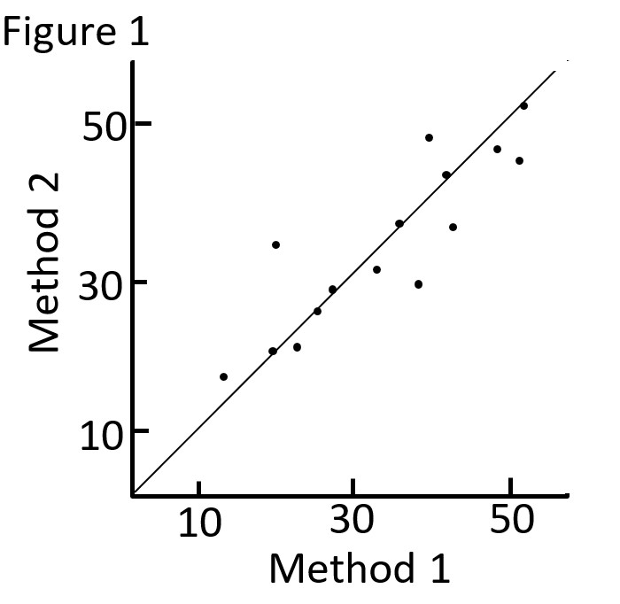
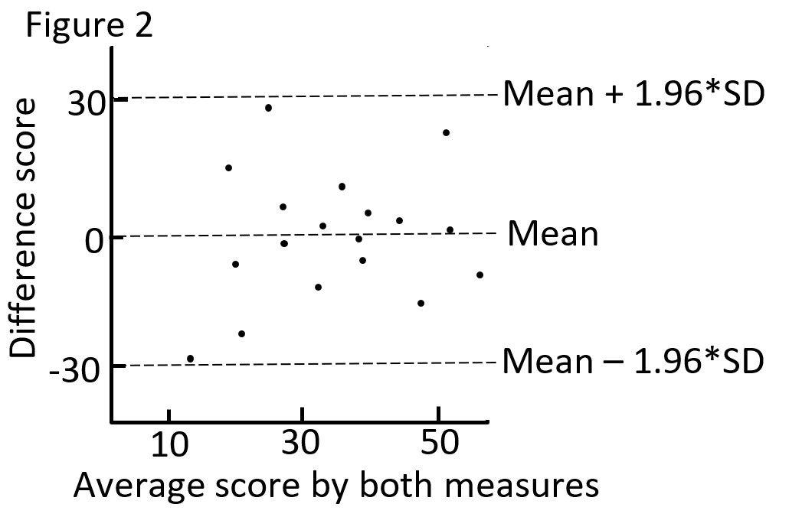

Inter-Rater Reliability
Topic: Review of the methods to evaluate agreement between informants/raters or methods for different types of data.
Introduction
The assessment of inter-rater reliability (IRR) provides a way of quantifying the degree of agreement between different methods or raters that make independent ratings about the features of a set of subjects. An IRR analysis evaluates how well methods/informants/raters provide similar ratings. This is different from a validity analysis, which evaluates how closely an instrument measures the construct.
Reliability is defined as the extent to which measurements can be replicated. It reflects not only the degree of correlation but also agreement between measurements.
Continuous Data
An initial step is to plot the two measures and draw a line in which all points would lie if the two methods gave exactly the same result (see Figure 1).

Correlation is not appropriate
Correlation measures strength of relation, not agreement. There is perfect agreement only if the points in Figure 1 lie on the diagonal line shown. There would be perfect correlation if the points lie along any straight line.
Graphic Assessment of Agreement
Use a Bland and Altman plot, which shows the relationship between the difference in scores against their mean (e.g. Figure 2).

If the difference score (d) is normally distributed, we would expect 95% of the values to lie between (d + 1.96 * SDd) and (d - 1.96 * SDd). SDd is the standard deviation of the difference score. These are the 95% limits of agreement, and define the range within which most differences between measurements will lie (these are not the same as confidence intervals).
As an example, the 95% limits of agreement in Figure 2 is between -30 and 30. You must use clinical judgment determine what is a clinically meaningful difference. For example if a 15-point difference on the measure is clinically meaningful, and the limits of agreement indicate that most difference scores lie between -30 to 30, then you the two measures may not be used interchangeable (since they differ so much).
The plot also shows the difference between scores, and whether the difference between methods/ raters is different depending on the average score of the measures.
Measuring Reliability; The Intraclass Correlation Coefficient (ICC)
ICC incorporates the magnitude of agreement in the IRR estimate, unlike kappa statistics (described below) which quantifies IRR based on all-or-nothing agreement.
ICC typically ranges from 0 to 1. Negative ICCs indicate systematic disagreement. Though the use of cut-off values is debated, ICC can be interpretable based on the 95% confidence interval as poor (<.50), moderate (0.50 - 0.75), good (0.75 - 0.90) or excellent reliability (>0.90).
See Hallgren (2012) for a SPSS and R tutorial for calculating ICC, and an overview of the different types of ICCs based on the nature of your study.
Categorical Data
Kappa
When data are categorical, it is misleading to look at the percent agreement as a measure of agreement/reliability (e.g. agreed on 45 instances out of 50, so 90%). This does not take into account the agreement we would expect by chance even if the two ratings were unrelated. The kappa statistic measures the level of agreement between raters for a set of categorical ratings and corrects for agreement that would be expected by chance, providing a standardized index of inter-rater reliability that can be generalized across studies.
\[ \kappa = \frac{P(a) - P(e)}{1 - P(e)} \]
where, P(a) = percent agreement, and P(e) = probability of expected agreement due to chance.
Possible values for kappa statistics range from -1 to 1:
1 indicates perfect agreement
0 indicates completely random agreement
-1 indicates perfect disagreement
Though the use of cut-off values is debated, kappa values can be interpretable as slight (< 0.2), fair (0.21 - 0.40), moderate (0.41 - 0.60), good (0.61 - 0.80) and very good (>.80) agreement.
See Hallgren (2012) for a SPSS and R tutorial for calculating kappa statistics for various scenarios (e.g. multiple raters, when observed ratings fall under one category at a much higher rate, etc.).
References and Further Readings
Altman, D.G. (1991). Practical Statistics for Medical Research. Chapman and Hall, London.
Bland JM, Altman D. Statistical methods for assessing agreement between two methods of clinical measurement. The Lancet. 1986;327(8476):307-10.
Hallgren KA. Computing inter-rater reliability for observational data: an overview and tutorial. Tutorials in quantitative methods for psychology. 2012;8(1):23.